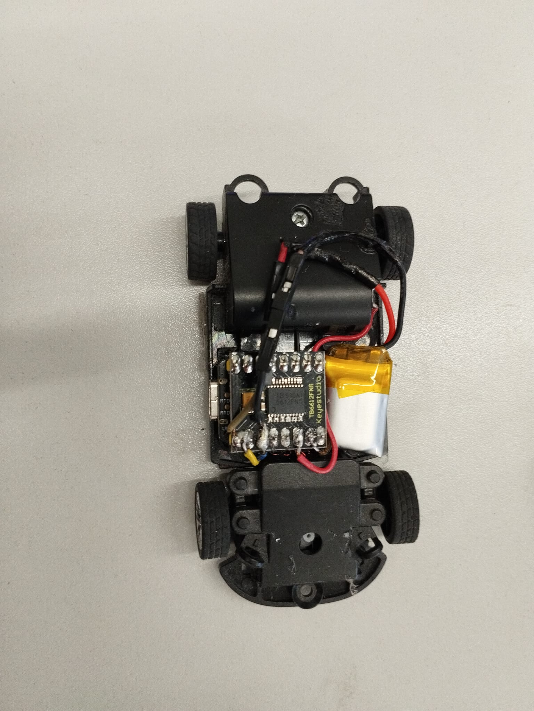

Robotics Engineering MSc Student
Robotics Engineering MSc student focused on autonomous systems, computer vision, control systems and embedded robotics.

Autonomous racing controller using CBFs, CLFs and optimization-based control.
Technologies: Python, Control Systems, Machine Learning
Multi-robot warehouse coordination system using LiDAR perception, SLAM and path planning.
Technologies: ROS, LiDAR, SLAM, Path Planning